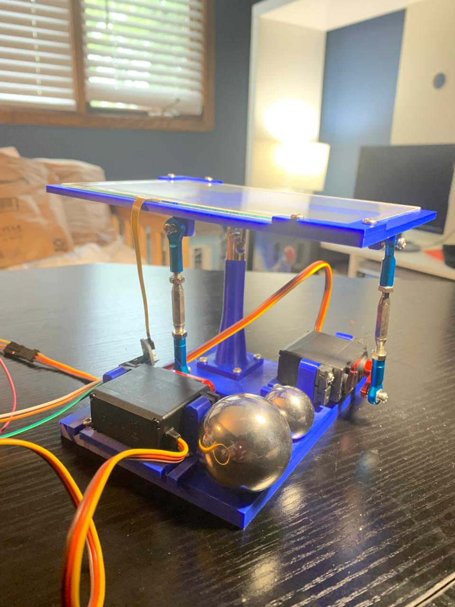
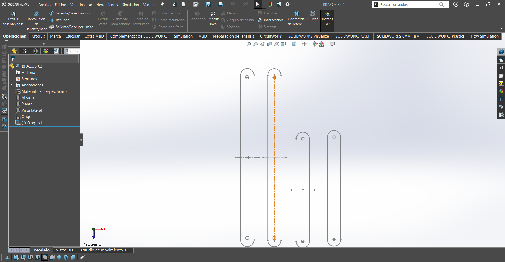
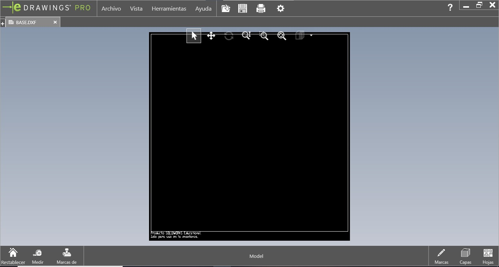
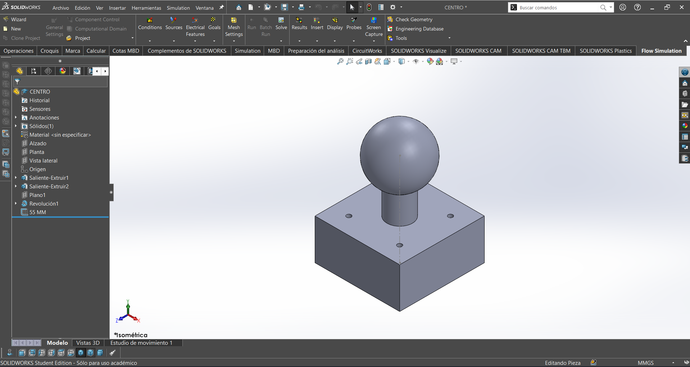
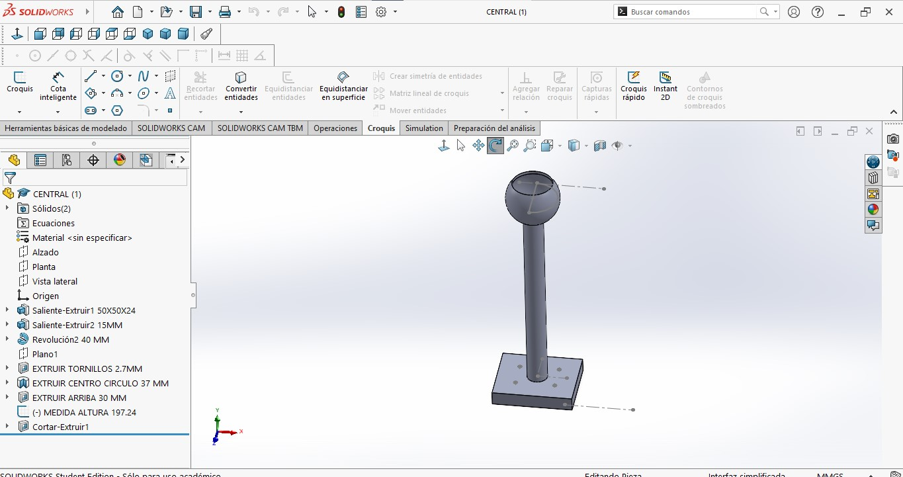
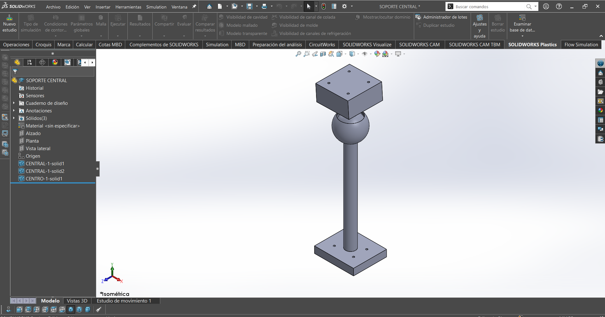
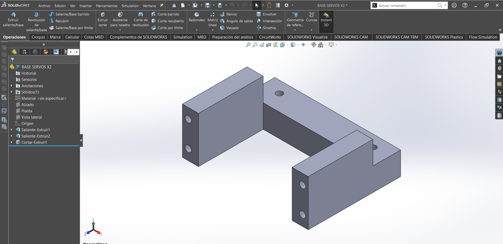
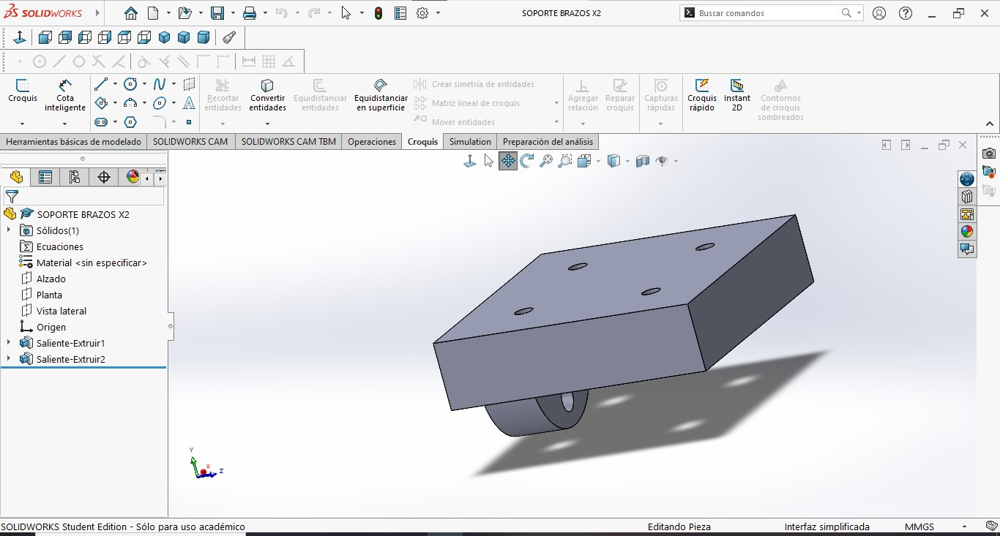

Proyecto 2: Plataforma con 2 Servos para Balancear Pelota
Este proyecto combina la Visión por Computadora (OpenCV) con el control del ESP32 para crear una plataforma que rastrea y equilibra una pelota de color verde en tiempo real. La cámara identifica la pelota, calcula su posición y envía órdenes a dos servomotores para mantenerla siempre en el centro.
Fase 1: Visión y Detección (Python)
Se localizó la pelota con precisión en el video.
- Configuración de la Cámara: Capturamos el video en vivo y aplicamos un filtro de desenfoque para eliminar el ruido visual.
- Detección de Color (Máscara): Convertimos la imagen a HSV y definimos el rango de color verde (
greenLower/greenUpper) para crear una máscara binaria (donde la pelota es blanca y todo lo demás es negro). - Localización Precisa: Usamos los contornos y el centroide para encontrar el punto central exacto de la pelota en la pantalla.
Fase 2: Diseño Físico
Elegimos usar dos servomotores MG995 para controlar los movimientos horizontal (X) y vertical (Y), para mover la plataforma con más torque, suficiente velocidad y estabilidad. Usamos esta imagen de referencia para el diseño de la plataforma y la colocación de los servomotores.

La estructura de la plataforma se construyó combinando corte láser e impresión 3D. La base, la superficie y los soportes que sostienen la plataforma fueron cortadas en MDF. Estos últimos se diseñaron pra que formaran una especie de "L" para que de este modo la plataforma tuviera un mayor movimiento.
Por otro lado, el soporte central que permite girar la plataforma, los soportes de los servos y el de los brazos fueron impresos en 3D.
Piezas MDF
Soportes de plataforma

Base y superficie (45 x 45)

Piezas impresión 3D
Pieza 1 Soporte central

Pieza 2 Soporte central

Pieza Soporte central

Soportes de servos

Soportes de brazos

Fase 3: Fase de Control (PID) y Calibración
Esta fase fue importante para que la pelota se mantuviera balanceada. Con ayuda del PID se calculó la corrección necesaria para llevar la pelota al centro y mantenerla ahí.
Implementación del PID (Python)
- Cálculo de Error: Comparamos dónde está la pelota (
center) con dónde debería estar (target = 300). - Fórmula PID:
- Proporcional (P): Qué tan lejos está la pelota ahora. (Corrección inmediata).
- Integral (I): Acumula el error a lo largo del tiempo. Corrige pequeños errores constantes, como la fricción.
- Derivativo (D): Velocidad con la que se mueve la pelota. Ayuda a frenar el sistema y a evitar que oscile.
- Conversión a Ángulo: El resultado de la fórmula PID se transforma directamente en los ángulos finales que deben tomar los servos.
Calibración y ajustes
- Ventana de Sliders: Creamos una ventana de ajustes (
Ajustes PID) que permite cambiar los coeficientes Kp, Ki y Kd en tiempo real para sintonizar el sistema hasta lograr la estabilidad.
- Límites: Se establecieron límites de ángulo tanto en Python como en el ESP32 para proteger los motores de movimientos bruscos.
Control manual
Para asegurar que los servos reaccionen lo más rápido posible, se controlaron de forma directa.
- Control Directo: Generamos la señal de control (PWM) manualmente usando la función
moverServoydelayMicroseconds. - El ESP32 llama continuamente a
moverServopara que los motores mantengan su posición y estén listos para reaccionar de inmediato a la siguiente orden del programa.
Videos de pruebas
Códigos finales
Código Python
import cv2
import numpy as np
import serial
import time
# --- CONFIGURACIÓN ---
COM_PORT = 'COM7' # <--- puerto
BAUD_RATE = 115200
# CONSTANTES INICIALES
FLAT_AZUL = 90
FLAT_VERDE = 110
# Rango de color VERDE
greenLower = (40, 70, 50)
greenUpper = (85, 255, 255)
# --- CONEXIÓN SERIAL ---
try:
ser = serial.Serial(COM_PORT, BAUD_RATE, timeout=1)
print(f"Conectado a {COM_PORT}")
time.sleep(1)
except:
print("ERROR: No se pudo conectar al Bluetooth.")
exit()
# Buscar cámara
cap = cv2.VideoCapture(1, cv2.CAP_DSHOW)
if not cap.isOpened():
cap = cv2.VideoCapture(0, cv2.CAP_DSHOW)
# --- VENTANA DE AJUSTES (SLIDERS) ---
def nothing(x): pass
cv2.namedWindow("Ajustes PID")
cv2.resizeWindow("Ajustes PID", 400, 200)
# Sliders.
# Formato: ("Nombre", "Ventana", ValorInicial, ValorMaximo, Funcion)
# NOTA: Los sliders solo manejan enteros. Dividiremos en el código.
cv2.createTrackbar("Kp x100", "Ajustes PID", 35, 200, nothing) # 35 -> 0.35
cv2.createTrackbar("Ki x1000", "Ajustes PID", 0, 100, nothing) # 0 -> 0.000
cv2.createTrackbar("Kd x100", "Ajustes PID", 15, 200, nothing) # 15 -> 0.15
# Variables PID
prev_error_x = 0; prev_error_y = 0
integral_x = 0; integral_y = 0
print("--- SISTEMA INICIADO ---")
print("Usa la ventana 'Ajustes PID' para calibrar.")
print("Presiona 'q' para salir.")
while True:
ret, frame = cap.read()
if not ret: break
frame = cv2.resize(frame, (600, 600))
blurred = cv2.GaussianBlur(frame, (11, 11), 0)
hsv = cv2.cvtColor(blurred, cv2.COLOR_BGR2HSV)
mask = cv2.inRange(hsv, greenLower, greenUpper)
mask = cv2.erode(mask, None, iterations=2)
mask = cv2.dilate(mask, None, iterations=2)
cnts, _ = cv2.findContours(mask.copy(), cv2.RETR_EXTERNAL, cv2.CHAIN_APPROX_SIMPLE)
# --- LEER VALORES DE LOS SLIDERS ---
# Leemos el valor entero y lo convertimos a decimal
val_p = cv2.getTrackbarPos("Kp x100", "Ajustes PID")
val_i = cv2.getTrackbarPos("Ki x1000", "Ajustes PID")
val_d = cv2.getTrackbarPos("Kd x100", "Ajustes PID")
Kp = val_p / 100.0 # Ej: 35 / 100 = 0.35
Ki = val_i / 1000.0 # Ej: 5 / 1000 = 0.005
Kd = val_d / 100.0 # Ej: 15 / 100 = 0.15
# Dibujar valores en pantalla para referencia
cv2.putText(frame, f"P: {Kp:.2f} I: {Ki:.3f} D: {Kd:.2f}", (10, 30),
cv2.FONT_HERSHEY_SIMPLEX, 0.7, (255, 0, 255), 2)
center = None
servo_azul = FLAT_AZUL
servo_verde = FLAT_VERDE
if len(cnts) > 0:
c = max(cnts, key=cv2.contourArea)
((x, y), radius) = cv2.minEnclosingCircle(c)
M = cv2.moments(c)
if M["m00"] > 0:
center = (int(M["m10"] / M["m00"]), int(M["m01"] / M["m00"]))
# Visuales
cv2.circle(frame, (int(x), int(y)), int(radius), (0, 255, 255), 2)
#cv2.line(frame, center, (300, 300), (255, 0, 0), 2)
# --- PID ---
target = 300
error_x = target - center[0]
error_y = target - center[1]
# PID X
integral_x += error_x
derivative_x = error_x - prev_error_x
output_x = (Kp * error_x) + (Ki * integral_x) + (Kd * derivative_x)
prev_error_x = error_x
# PID Y
integral_y += error_y
derivative_y = error_y - prev_error_y
output_y = (Kp * error_y) + (Ki * integral_y) + (Kd * derivative_y)
prev_error_y = error_y
# --- MAPEO ---
servo_verde = int(FLAT_VERDE - output_x)
servo_azul = int(FLAT_AZUL - output_y)
else:
# Si se pierde la bola, resetear integrales para evitar "golpes" al volver
integral_x = 0
integral_y = 0
cv2.putText(frame, "CENTERING", (10, 60), cv2.FONT_HERSHEY_SIMPLEX, 1, (0, 0, 255), 2)
# Limites físicos
servo_azul = max(60, min(120, servo_azul))
servo_verde = max(80, min(140, servo_verde))
# Enviar al ESP32
try:
comando = f"{servo_azul},{servo_verde}\n"
ser.write(comando.encode('utf-8'))
except:
pass
cv2.imshow("Robot Vision", frame)
if cv2.waitKey(1) & 0xFF == ord('q'):
break
cap.release()
cv2.destroyAllWindows()
ser.close()
Código Arduino
#include <Arduino.h>
#include "BluetoothSerial.h"
BluetoothSerial SerialBT;
// --- PINES ---
const int PIN_AZUL = 27; // Servo Y
const int PIN_VERDE = 14; // Servo X
// --- VARIABLES ---
int anguloAzul = 90; // Inicia en Plano
int anguloVerde = 110; // Inicia en Plano
// --- FUNCIÓN MANUAL (Bit-Banging) ---
// Genera la señal PWM directamente sin la librería Servo.h
void moverServo(int pin, int angulo) {
// Limites duros de seguridad
if (angulo < 40) angulo = 40;
if (angulo > 150) angulo = 150;
// Matematica: 0deg=500us, 180deg=2400us
// Convierte el ángulo al ancho de pulso en microsegundos (500us a 2400us)
int pulso = 500 + ((long)angulo * 1900) / 180;
// Generación del pulso
digitalWrite(pin, HIGH);
delayMicroseconds(pulso);
digitalWrite(pin, LOW);
}
void setup() {
Serial.begin(115200);
// NOMBRE DEL BLUETOOTH
SerialBT.begin("ESP32_BALL_PLATE");
Serial.println("BLUETOOTH LISTO: Conecta a 'ESP32_BALL_PLATE'");
pinMode(PIN_AZUL, OUTPUT);
pinMode(PIN_VERDE, OUTPUT);
}
void loop() {
// 1. RECEPCIÓN DE DATOS
if (SerialBT.available()) {
// Leer hasta el salto de línea que envía Python
String paquete = SerialBT.readStringUntil('\n');
paquete.trim(); // Quitamos espacios basura
// Buscar la coma separadora "anguloY,anguloX" ("90,110")
int coma = paquete.indexOf(',');
if (coma > 0) {
String sAzul = paquete.substring(0, coma);
String sVerde = paquete.substring(coma + 1);
// Convertir a entero
anguloAzul = sAzul.toInt();
anguloVerde = sVerde.toInt();
}
}
// 2. REFRESCO CONSTANTE (Vital para que no se 'suelten' los servos)
// Se llama la función continuamente para mantener la señal PWM de los servos
moverServo(PIN_AZUL, anguloAzul);
moverServo(PIN_VERDE, anguloVerde);
// Pausa para completar ciclo
delay(15);
}
Resultados y Conclusión
Videos
Con este proyecto logramos elaborar una plataforma funcional que balanceara una pelota, integrando conocimientos de programación, mecánica y electrónica. Con Python se aprendió a usar la cámara para detectar la pelota verde y encontrar su posición exacta. También, con la ayuda del PID, la plataforma fue capaz de frenar y acelerar lo necesario para que la pelota regresara al centro de forma suave y precisa.
Además, al controlar los motores directamente, se evitó que hubiera errores de conexión y que la plataforma ejecutara el movimiento con la velocidad y precisión adecuada. La calibración fue lo que hizo que la plataforma funcionara de manera suave, sin movimientos bruscos y oscilaciones, ya que todo fue un proceso de prueba y error. Esto nos llevó a realizar varios cambios y ajustes que nos ayudaron a entender cómo un sistema puede ver, pensar y reaccionar al entorno.